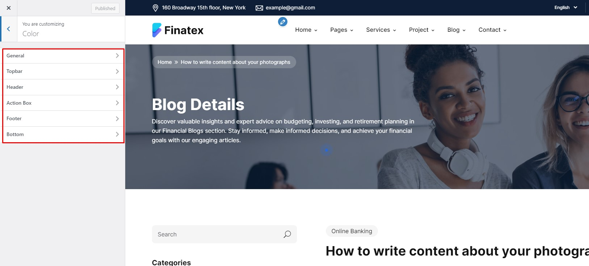
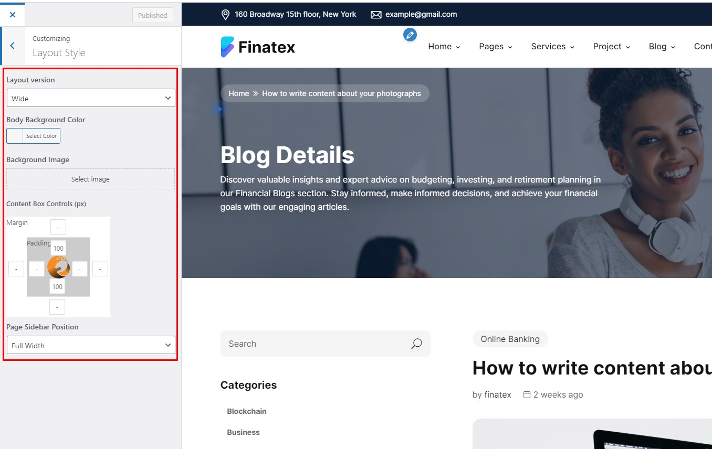
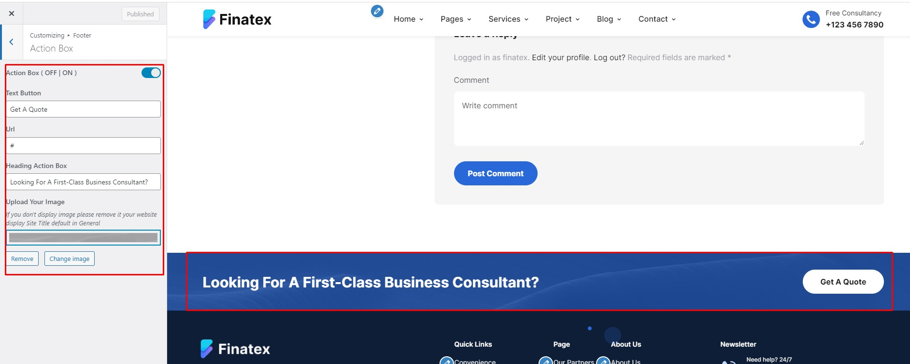

Introduction
First of all, Themes Flat thank you for choosing to buy our theme!
In this document, we provide all kinds of good information with all the details you need to use our theme. It is recommended you read it thoroughly to fully leverage the Finatex theme's capabilities. Please also make sure to check out our Video Tutorials as they explain everything covered in here in greater depth. ​We hope you have fun and enjoy working with our theme!
- Theme version: 1.0.0
- Created date: May 29, 2024
- Update date: May 29, 2024
- Author: Themesflat
Email: helpdeskthemesflat@gmail.com
Skype id: helpdeskthemesflat
Create ticket id : https://themesflat.ticksy.com/ticket
Getting Started
Requirements
- PHP 8.0 or higher
Recommended
Required must have
- upload_max_filesize = 128M
- post_max_size = 164M
- max_execution_time = 300
- max_input_time = 300
- memory_limit = 256M
Besides, need more
- Elementor
- Contact Form 7
- Wiatech Addons
- Themesflat Addons For Elementor
- Slider Revolution
- One Click Demo Import
- MC4WP: Mailchimp for WordPress
Theme Installation via WordPress
After purchase and download we have file themename.zip Continue we need Extract Files i have 3 files: 1.theme, 2.theme-child, 3.documentation
Please, follow the steps below to install Theme.
Watch the video One Click Install Demo
Install by WordPress Theme Manager
This is probably the simplest way for most users. Here are steps you need to take:
- Step 1 - Login to your WordPress Dashboard.
- Step 2 - Go to Appearance > Themes. And then click Add new button, located at the top of the screen or Add new theme (see screenshots below).
- Step 3 - Click on Upload button at the top of the screen.
- Step 4 - Next, Click Choose File button to browse themename.zip file in locate.
- Step 5 - Click Install button and wait a moment.
- Step 6 - After done installing, click Activate to publish the theme.
- Step 7 - After activating the theme a notice should appear on the top of the screen, click on link Begin installing plugins ( See screenshots below ).
- Step 8 - After install plugins, go to Dashboard > Appearance > Install Plugins, check all the plugins you want to activate require for this theme


After installing the Main theme, if you want user more child Child theme. Then please continue install child-theme the with the same installation above
The theme requires the following plugin: Contact Form 7, Elementor, ThemesFlat, Themesflat Addons, and recommends the following plugins: One Click Demo Import, Slider Revolution

Install through FTP upload
If you want to install via FTP, here are 3 steps you need to take:
- Using FTP client, login to the server where your WordPress website is hosted
- Using FTP client, navigate to the /wp-content/themes/ directory under your WordPress website's root directory
- Using FTP client, upload the Finatex directory to themes directory on remote servers
Once installation is complete, your Finatex theme will be ready to use.
Theme Customize
To start customizing Theme, in the Admin page please go to Dashboard > Appearance > Customize
Please remember to click Save & Publish button after done customizing to save the changes
These are global settings so its effect is site-wide. These settings can be overridden in single post or page
General
-
Site Information
-
Site Title: You can setup and change your site title
-
Tagline: A few words to describe your site
-
Site Icon: Site Icons are what you see in browser tabs, bookmark bars, and within the WordPress mobile apps.
To Customize Theme you go to: Dashboarb -> Appearance -> Customize -> Site Identity
-
-
Site Display
-
Enable Smooth Scroll: Enabled Smooth Scroll or not
-
Enable Preload: Displayed while loading to another page
-
Go To Button: Enabled Go To Button or not
To Customize Theme you go to: Dashboarb -> Appearance -> Customize -> General
-
Header
To setup Header layout, please navigate to Dashboard > Appearance > Customize > Header.
- Custom Logo
-
Upload Your Logo: Drag or select your new logo on website here
-
Upload Your Logo On Mobile: Drag or select your new logo on mobile here
-
Logo Size: Choose the size for the Logo
-
Box Controls: Adjust padding and margin for logo
-
- Topbar
- Custom Menu
- Header Options
-
Header Style: Choose the type of header you want to display by default on your website
-
Header Sticky: Enabled Header Sticky or not
-
Search Box: Enabled Search Box or not
-
Sidebar Toggler: Enabled Sidebar Toggler or not
-
- Custom Menu
-
Select 1 menu to edit or create new
-
Drag and drop to change the menu here
To setup Custom Menu layout, please navigate to Dashboard > Appearance > Customize > Menus
-
Page Title & Breadcrumb
- Page Title Style
To setup Custom Page Title Style layout, please navigate to Dashboard > Appearance > Customize > Page Title > Page Title
-
Edit the Page Title Controls here:
-
- Breadcrumb
-
Enable Breadcrumbs: Turn on/off to show/hide the breadcrumbs
-
Breadcrumb Prefix: Enter prefix text for the breadcrumb
-
Breadcrumb Separator: Enter the character you want to use as the separator of breadcrumb
-
Typography
To setup Custom Page Title Style layout, please navigate to Dashboard > Appearance > Customize > Typography
- Body Font: You can select Font family, Font size Font weight or Font color for the body text
Blockquote Typography
- Topbar Font: You can select Font family, Font size Font weight or Font color for the topbar text
- Menu Font: You can select Font family, Font size Font weight or Font color for the menu text, submenu text
SubMenu
- Heading Font
And you can edit a lot here
Layout & Styles
In the section Layout & Styles, we provide some options to customize the theme layout and styles.
-
Scheme Color
To setup Custom Page Title Style layout, please navigate to Dashboard > Appearance > Customize > Color
With this option, you can change unlimited color for your General: Primary Color, Secondary Color, Accent Color, Background Color, please navigate to Dashboard > Appearance > Customize > Color > General
With this option, you can change unlimited color for your Topbar, please navigate to Dashboard > Appearance > Customize > Color > Topbar
With this option, you can change unlimited color for your Header, please navigate to Dashboard > Appearance > Customize > Color > Header
With this option, you can change unlimited color for your Footer, please navigate to Dashboard > Appearance > Customize > Color > Footer

To start customizing Background Image, in the Admin page please go to Dashboard > Appearance > Customize > Background Image
To start customizing Widgets, in the Admin page please go to Dashboard > Appearance > Customize > Widgets
Footer
-
To edit the default footer, in the Admin page please go to Dashboard > Appearance > Customize > Footer
You can edit the contents of the Footer here

-
Columns Footer
You can edit the contents of the Columns Footer here

Go to Dashboard -> Appearance -> Widgets

-
Bottom
You can edit the contents of the Bottom here
-
Action Box
You can edit the contents of the Bottom here

Now, you've finished the setup for your blog post.
Post Type
To Customize Post you go to: Dashboarb -> Appearance -> Customize -> Content
-
Blog archive
- Sidebar Position: Select sidebar position on the posts page (No Sidebar/Left/Right)
- Blog Layout: Select layout style for List (List/Grid)
- Post Grid Columns: Choose to display the number of columns of the article
- List Sidebar: In the dropdown box, select the sidebar you want to display on posts page
- Post Content Elements: Drag and drop elements to re-order.
- Post Excepts Length: This option is only available when you turn on "Auto Post Excepts". It uses to limit the content length which is shown on posts page
- Social Share: Enable or disable Social Share
- Readmore Text: You can modify the text of Read more button here
- Meta Elements:Drag and drop elements to re-order.
-
Blog Single
- Post Navigator: Enabled Post Navigator or not
- Related Posts: Enabled Related Posts or not
- Related Posts Style: Choose Related Posts Style (Blog List or Blog Grid)
- Columns Of Related Posts: Choose 2 Columns, 3 Columns, 4 Columns
- Number Of Related Posts: Number Of Related Posts
-
Project Archive
- Portfolio Slug: You can modify the Portfolio Slug here
- Portfolio Name: You can modify the Portfolio Name here
- Sidebar Position: Choose Sidebar Style
- List Sidebar: Choose Sidebar Style
- Columns Of Related Posts: Choose 2 Columns, 3 Columns, 4 Columns
- Number Of Related Posts: Number Of Related Posts ....
-
Project Single
- Customize Portfolio Featured Title: You can modify the Title here
- Post Navigator: Enabled Post Navigator or not
- Related Posts: Enabled Related Posts or not
- Columns Of Related Posts: Choose 2 Columns, 3 Columns, 4 Columns
- Number Of Related Posts: Number Of Related Posts
-
Services Archive
- Services Slug: You can modify the Services Slug here
- Services Name: You can modify the Services Name here
- Sidebar Position: Choose Sidebar Style
- List Sidebar: Choose Sidebar Style
- Columns Of Related Posts: Choose 2 Columns, 3 Columns, 4 Columns
- Number Of Related Posts: Number Of Related Posts ....
-
Services Single
- Customize Services Featured Title: You can modify the Title here
- Post Navigator: Enabled Post Navigator or not
- Related Posts: Enabled Related Posts or not
- Columns Of Related Posts: Choose 2 Columns, 3 Columns, 4 Columns
- Number Of Related Posts: Number Of Related Posts
Creat Post Type
-
Services
-
Project
To create a Services list you go to: Dashboarb -> Services, then select the Product to edit and click Edit or click New Services to create a new Services
Change icon of services you go to: Dashboarb -> Services -> Edit with Elementor
you go to: Settings -> TF Services -> Choice icon

To create a Project list you go to: Dashboarb -> Project, then select the Product to edit and click Edit or click New Project to create a new Project
Change icon of Project you go to: Dashboarb -> Project -> Edit with Elementor same with TF Services
Themesflat Addons
NOTE: to use all widgets of Themesflat addons, You select the page to edit or create a new page Edit with Elementor -> Elementor -> Themesflat Addons You build it at Themesflat Addons You can customize at Content and Advanced You build it at Themesflat Addons, it helps you to create a simple Team You can customize at Content and Advanced You build it at Themesflat Addons You can customize at Content and Advanced You can customize at Content and Advanced You can customize at Content and Advanced You can customize at Content and Advanced You can customize at Content and Advanced There are many more widgets for you to choose, Everything is so simple when you just need drag and drop. Wish you have a great website!
TF Title Section
TF Services
TF Icon Box
TF Project
TF Team Carousel
TF Testimonial Carousel

TF Post